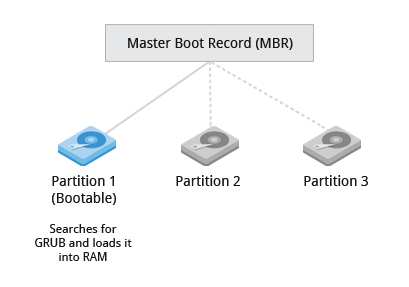
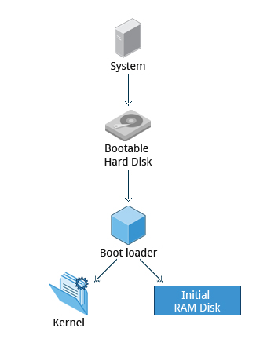
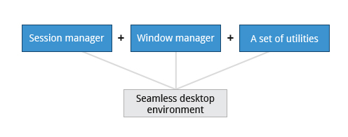
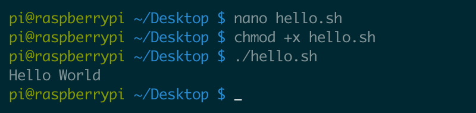

glue between hardware and applications
The boot loader loads both the kernel and an initial RAM–based file system (initramfs) into memory, so it can be used directly by the kernel.
When the kernel is loaded in RAM, it immediately initializes and configures the computer’s memory and also configures all the hardware attached to the system.
This includes all processors, I/O subsystems, storage devices, etc. The kernel also loads some necessary user space applications.

collections of software making up a linux based OS
collections of software making up a linux based OS
Once the POST is completed, the system control passes from the BIOS to the boot loader. The boot loader is usually stored on one of the hard disks in the system, either in the boot sector (for traditional BIOS/MBR systems) or the EFI partition (for more recent (Unified) Extensible Firmware Interface or EFI/UEFI systems). Up to this stage, the machine does not access any mass storage media. Thereafter, information on date, time, and the most important peripherals are loaded from the CMOS values (after a technology used for the battery-powered memory store which allows the system to keep track of the date and time even when it is powered off). A number of boot loaders exist for Linux; the most common ones are GRUB (for GRand Unified Boot loader), ISOLINUX (for booting from removable media), and DAS U-Boot (for booting on embedded devices/appliances). When booting Linux, the boot loader is responsible for loading the kernel image and the initial RAM disk or filesystem (which contains some critical files and device drivers needed to start the system) into memory.
A boot loader is a program responsible for loading the Linux kernel with optional kernel parameters and the Linux initial RAM disk, known as initrd. Linux kernel is the core of the Linux operating system, and it starts the init (short for initialization) process, or an init replacement such as systemd, immediately after being loaded. The Linux initial RAM disk provides a temporary storage space for loading critical files into memory before the real root file system can be mounted.
Generally, in a Linux desktop system, the X Window System is loaded as one of the final steps in the boot process. A service called the display manager keeps track of the displays being provided and loads the X server (so-called, because it provides graphical services to applications, sometimes called X clients). The display manager also handles graphical logins and starts the appropriate desktop environment after a user logs in. X Window System is a rather old system; it dates back to the mid 1980s and, as such, has certain deficiencies on modern systems (for example, with security), as it has been stretched rather far from its original purposes. A newer system, known as Wayland, is gradually superseding it and was adopted as the default display system in Fedora 25.
A desktop environment consists of a session manager, which starts and maintains the components of the graphical session, and the window manager, which controls the placement and movement of windows, window title-bars, and controls. Although these can be mixed, generally a set of utilities, session manager, and window manager are used together as a unit, and together provide a seamless desktop environment. If the display manager is not started by default in the default runlevel, you can start X a different way, after logging on to a text-mode console, by running startx from the command line. Or, you can start the display manager (gdm, lightdm, kdm, xdm, etc.) manually from the command line. This differs from running startx as the display managers will project a sign in screen.
When you install a desktop environment, the X display manager starts at the end of the boot process. It is responsible for starting the graphics system, logging in the user, and starting the user’s desktop environment. You can often select from a choice of desktop environments when logging in to the system. The default display manager for GNOME is called gdm. Other popular display managers include lightdm (used on Ubuntu before version 18.04 LTS) and kdm (associated with KDE).
Bash is a command processor that typically runs in a text window where the user types commands that cause actions. Bash can also read and execute commands from a file, called a shell script. Like all Unix shells, it supports filename globbing (wildcard matching), piping, here documents, command substitution, variables, and control structures for condition-testing and iteration. The keywords, syntax, dynamically scoped variables and other basic features of the language are all copied from sh. Other features, e.g., history, are copied from csh and ksh. Bash is a POSIX-compliant shell, but with a number of extensions.
example of a bash session
A desktop environment (DE) is an implementation of the desktop metaphor made of a bundle of programs running on top of a computer operating system, which share a common graphical user interface (GUI), sometimes described as a graphical shell. The desktop environment was seen mostly on personal computers until the rise of mobile computing. Desktop GUIs help the user to easily access and edit files, while they usually do not provide access to all of the features found in the underlying operating system. Instead, the traditional command-line interface (CLI) is still used when full control over the operating system is required. A desktop environment typically consists of icons, windows, toolbars, folders, wallpapers and desktop widgets (see Elements of graphical user interfaces and WIMP). A GUI might also provide drag and drop functionality and other features that make the desktop metaphor more complete. A desktop environment aims to be an intuitive way for the user to interact with the computer using concepts which are similar to those used when interacting with the physical world, such as buttons and windows.
command line interpreter that interprets the command line input and instructs the operating system to perform accordingly
a shell is a user interface for access to an operating system's services.
In general, operating system shells use either a command-line interface (CLI) or graphical user interface (GUI), depending on a computer's role and particular operation.
It is named a shell because it is the outermost layer around the operating system kernel.
Starting an x86-based Linux system involves a number of steps.
When the computer is powered on, the Basic Input/Output System (BIOS) initializes the hardware,
including the screen and keyboard, and tests the main memory.
This process is also called POST (Power On Self Test).
The BIOS software is stored on a ROM chip on the motherboard.
After this, the remainder of the boot process is controlled by the operating system (OS).

A partition is a physically contiguous section of a disk, or what appears to be so in some advanced setups.
A filesystem is a method of storing/finding files on a hard disk (usually in a partition).
One can think of a partition as a container in which a filesystem resides, although in some circumstances,
a filesystem can span more than one partition if one uses symbolic links.
A partition is a logical part of the disk
A filesystem is a method of storing/finding files on a hard disk.
| Windows | Linux | |
| Partition | Disk 1 | /dev/sda1 |
| Filesystem Type | NTFS/VFAT | EXT3/EXT4/XFS/BTRFS... |
| Mounting Parameters | DriveLetter | MountPoint |
| Base Folder (where OS is stored) | C:\ | / |
Near the end of the boot process, init starts a number of text-mode login prompts.
These enable you to type your username, followed by your password, and to eventually get a command shell.
However, if you are running a system with a graphical login interface, you will not see these at first.
the terminals which run the command shells can be accessed using the ALT key plus a function key.
Most distributions start six text terminals and one graphics terminal starting with F1 or F2.
Within a graphical environment, switching to a text console requires pressing CTRL-ALT + the appropriate function key (with F7 or F1 leading to the GUI).

RAM (Random Access Memory)
The initramfs filesystem image contains programs and binary files that perform all actions needed to mount the proper root filesystem,
like providing kernel functionality for the needed filesystem and device drivers for mass storage controllers with a facility called udev (for user device),
which is responsible for figuring out which devices are present, locating the device drivers they need to operate properly, and loading them.
After the root filesystem has been found, it is checked for errors and mounted.
The mount program instructs the operating system that a filesystem is ready for use,
and associates it with a particular point in the overall hierarchy of the filesystem (the mount point).
If this is successful, the initramfs is cleared from RAM and the init program on the root filesystem (/sbin/init) is executed.
init handles the mounting and pivoting over to the final real root filesystem.
If special hardware drivers are needed before the mass storage can be accessed, they must be in the initramfs image.


Linux systems store their important files according to a standard layout called the Filesystem Hierarchy Standard (FHS).
Having a standard is designed to ensure that users, administrators, and developers can move between distributions without having to re-learn how the system is organized.
Linux uses the ‘/’ character to separate paths (unlike Windows, which uses ‘\’), and does not have drive letters.
Multiple drives and/or partitions are mounted as directories in the single filesystem.
Removable media such as USB drives and CDs and DVDs will show up as mounted at /run/media/yourusername/disklabel for recent Linux systems, or under /media for older distributions.
For example, if your username is student a USB pen drive labeled FEDORA might end up being found at /run/media/student/FEDORA,
and a file README.txt on that disc would be at /run/media/student/FEDORA/README.txt.
All Linux filesystem names are case-sensitive, so /boot, /Boot, and /BOOT represent three different directories (or folders).
Many distributions distinguish between core utilities needed for proper system operation and other programs, and place the latter in directories under /usr (think user).
To get a sense for how the other programs are organized,
find the /usr directory in the diagram from the previous page and compare the subdirectories with those that exist directly under the system root directory (/).
More infoGRUB is the most popular and the most feature-packed boot loader for the Linux operating system.
It is based on the now obsolete GRUB Legacy, which was created in 1995 by Erich Boleyn for the operating system GNU/Hurd.
GRUB supports both BIOS and UEFI, and it can handle all popular Linux file systems, including Btrfs, ext4, ReiserFS v3, VFAT, and XFS.
Compared to GRUB Legacy, modern GRUB is cleaner, more powerful, and safer.